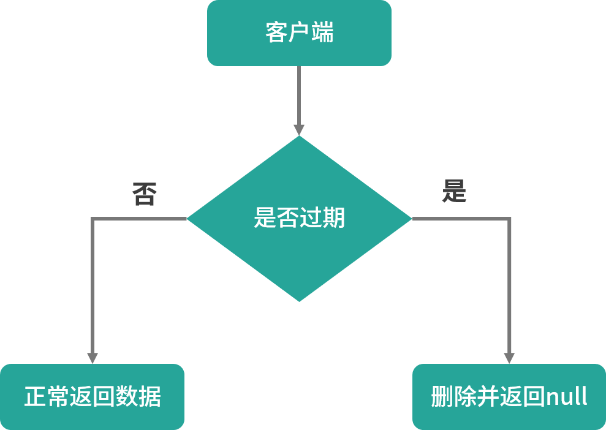
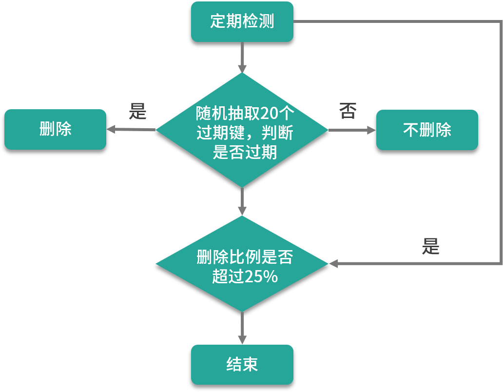

Redis 和 MySQL 是面试绕不过的两座大山，他们一个是关系型数据库的代表（MySQL），一个是键值数据库以及缓存中间件的一哥。尤其 Redis 几乎是所有互联网公司都在用的技术，比如国内的 BATJ、新浪、360、小米等公司；国外的微软、Twitter、Stack Overflow、GitHub、暴雪等公司。我从业了十几年，就职过 4、5 家公司，有的公司用 MySQL、有的用 SQL Server、甚至还有的用 Oracle 和 DB2，但缓存无一例外使用的都是 Redis，从某种程度上来讲 Redis 是普及率最高的技术，没有之一。
我们本课时的面试题是，Redis 是如何处理过期数据的？当内存不够用时 Redis 又是如何处理的？
典型回答
我们在新增 Redis 缓存时可以设置缓存的过期时间，该时间保证了数据在规定的时间内失效，可以借助这个特性来实现很多功能。比如，存储一定天数的用户（登录）会话信息，这样在一定范围内用户不用重复登录了，但为了安全性，需要在一定时间之后重新验证用户的信息。因此，我们可以使用 Redis 设置过期时间来存储用户的会话信息。
对于已经过期的数据，Redis 将使用两种策略来删除这些过期键，它们分别是惰性删除和定期删除。
惰性删除是指 Redis 服务器不主动删除过期的键值，而是当访问键值时，再检查当前的键值是否过期，如果过期则执行删除并返回 null 给客户端；如果没过期则正常返回值信息给客户端。
它的优点是不会浪费太多的系统资源，只是在每次访问时才检查键值是否过期。缺点是删除过期键不及时，造成了一定的空间浪费。
惰性删除的源码位于 src/db.c 文件的 expireIfNeeded 方法中，如下所示：
1 | int expireIfNeeded(redisDb *db, robj *key) { |
惰性删除的执行流程如下图所示：

除了惰性删除之外，Redis 还提供了定期删除功能以弥补惰性删除的不足。
定期删除是指 Redis 服务器每隔一段时间会检查一下数据库，看看是否有过期键可以被清除。
默认情况下 Redis 定期检查的频率是每秒扫描 10 次，用于定期清除过期键。当然此值还可以通过配置文件进行设置，在 redis.conf 中修改配置“hz”即可，默认的值为“hz 10”。
小贴士：定期删除的扫描并不是遍历所有的键值对，这样的话比较费时且太消耗系统资源。Redis 服务器采用的是随机抽取形式，每次从过期字典中，取出 20 个键进行过期检测，过期字典中存储的是所有设置了过期时间的键值对。如果这批随机检查的数据中有 25% 的比例过期，那么会再抽取 20 个随机键值进行检测和删除，并且会循环执行这个流程，直到抽取的这批数据中过期键值小于 25%，此次检测才算完成。
定期删除的源码在 expire.c 文件的 activeExpireCycle 方法中，如下所示：
1 | void activeExpireCycle(int type) { |
定期删除的执行流程，如下图所示：

小贴士：Redis 服务器为了保证过期删除策略不会导致线程卡死，会给过期扫描增加了最大执行时间为 25ms。
以上是 Redis 服务器对待过期键的处理方案，当 Redis 的内存超过最大允许的内存之后，Redis 会触发内存淘汰策略，这和过期策略是完全不同的两个概念，经常有人把二者搞混，这两者一个是在正常情况下清除过期键，一个是在非正常情况下为了保证 Redis 顺利运行的保护策略。
当 Redis 内存不够用时，Redis 服务器会根据服务器设置的淘汰策略，删除一些不常用的数据，以保证 Redis 服务器的顺利运行。
考点分析
本课时的面试题并非 Redis 的入门级面试题，需要面试者对 Redis 有一定的了解才能对答如流，并且 Redis 的过期淘汰策略和内存淘汰策略的概念比较类似，都是用于淘汰数据的。因此很多人会把二者当成一回事，但其实并不是，这个面试者特别注意一下，和此知识点相关的面试题还有以下这些：
- Redis 内存淘汰策略有哪些？
- Redis 有哪些内存淘汰算法？
知识扩展
Redis 内存淘汰策略
我们可以使用 config get maxmemory-policy 命令，来查看当前 Redis 的内存淘汰策略，示例代码如下：
1 | 127.0.0.1:6379> config get maxmemory-policy |
从上面的结果可以看出，当前 Redis 服务器设置的是“noeviction”类型的内存淘汰策略，那么这表示什么含义呢？Redis 又有几种内存淘汰策略呢？
在 4.0 版本之前 Redis 的内存淘汰策略有以下 6 种。
- noeviction：不淘汰任何数据，当内存不足时，执行缓存新增操作会报错，它是 Redis 默认内存淘汰策略。
- allkeys-lru：淘汰整个键值中最久未使用的键值。
- allkeys-random：随机淘汰任意键值。
- volatile-lru：淘汰所有设置了过期时间的键值中最久未使用的键值。
- volatile-random：随机淘汰设置了过期时间的任意键值。
- volatile-ttl：优先淘汰更早过期的键值。
可以看出我们上面示例使用的是 Redis 默认的内存淘汰策略“noeviction”。
而在 Redis 4.0 版本中又新增了 2 种淘汰策略：
volatile-lfu，淘汰所有设置了过期时间的键值中最少使用的键值；
allkeys-lfu，淘汰整个键值中最少使用的键值。
小贴士：从以上内存淘汰策略中可以看出，allkeys-xxx 表示从所有的键值中淘汰数据，而 volatile-xxx 表示从设置了过期键的键值中淘汰数据。
这个内存淘汰策略我们可以通过配置文件来修改，redis.conf 对应的配置项是“maxmemory-policy noeviction”，只需要把它修改成我们需要设置的类型即可。
需要注意的是，如果使用修改 redis.conf 的方式，当设置完成之后需要重启 Redis 服务器才能生效。
还有另一种简单的修改内存淘汰策略的方式，我们可以使用命令行工具输入“config set maxmemory-policy noeviction”来修改内存淘汰的策略，这种修改方式的好处是执行成功之后就会生效，无需重启 Redis 服务器。但它的坏处是不能持久化内存淘汰策略，每次重启 Redis 服务器之后设置的内存淘汰策略就会丢失。
Redis 内存淘汰算法
内存淘汰算法主要包含两种：LRU 淘汰算法和 LFU 淘汰算法。
LRU（ Least Recently Used，最近最少使用）淘汰算法：是一种常用的页面置换算法，也就是说最久没有使用的缓存将会被淘汰。
LRU 是基于链表结构实现的，链表中的元素按照操作顺序从前往后排列，最新操作的键会被移动到表头，当需要进行内存淘汰时，只需要删除链表尾部的元素即可。
Redis 使用的是一种近似 LRU 算法，目的是为了更好的节约内存，它的实现方式是给现有的数据结构添加一个额外的字段，用于记录此键值的最后一次访问时间。Redis 内存淘汰时，会使用随机采样的方式来淘汰数据，它是随机取 5 个值 (此值可配置) ，然后淘汰最久没有使用的数据。
LFU（Least Frequently Used，最不常用的）淘汰算法：最不常用的算法是根据总访问次数来淘汰数据的，它的核心思想是“如果数据过去被访问多次，那么将来被访问的频率也更高”。
LFU 相对来说比 LRU 更“智能”，因为它解决了使用频率很低的缓存，只是最近被访问了一次就不会被删除的问题。如果是使用 LRU 类似这种情况数据是不会被删除的，而使用 LFU 的话，这个数据就会被删除。
Redis 内存淘汰策略使用了 LFU 和近 LRU 的淘汰算法，具体使用哪种淘汰算法，要看服务器是如何设置内存淘汰策略的，也就是要看“maxmemory-policy”的值是如何设置的。
小结
本课时我们讲了 Redis 的过期删除策略：惰性删除 + 定期删除；还讲了 Redis 的内存淘汰策略，它和过期策略是完全不同的两个概念，内存淘汰策略是当内存不够用时才会触发的一种机制，它在 Redis 4.0 之后提供了 8 种内存淘汰策略，这些淘汰策略主要使用了近 LRU 淘汰算法和 LFU 淘汰算法。
00:00 Java 源码剖析 34 讲